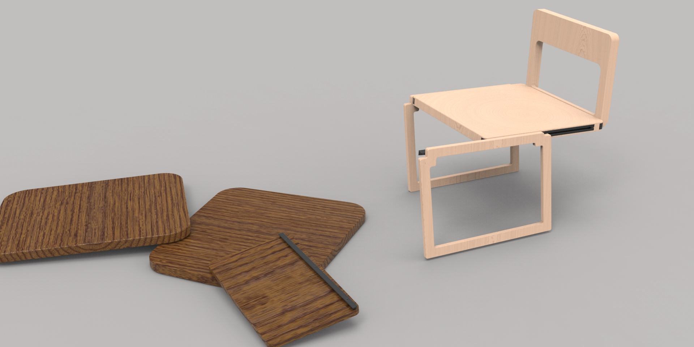
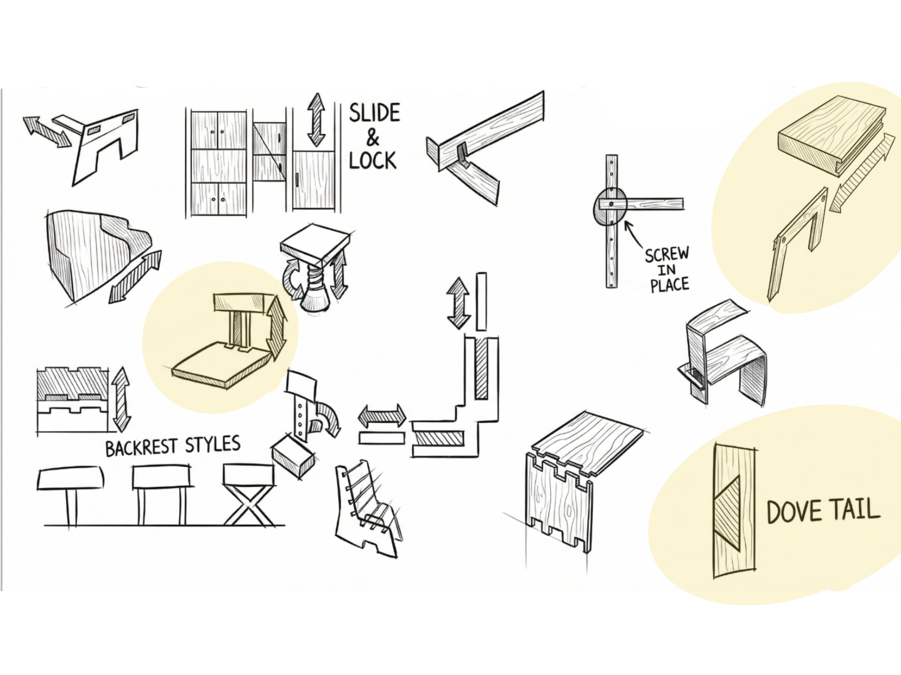
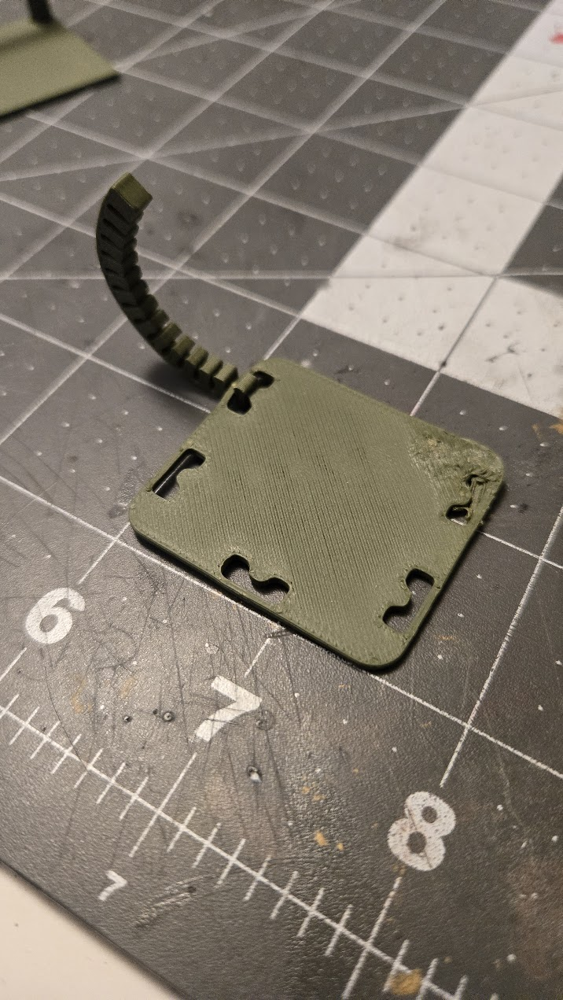
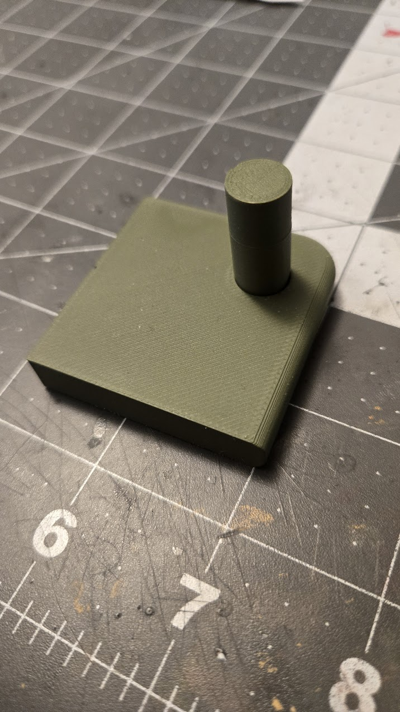
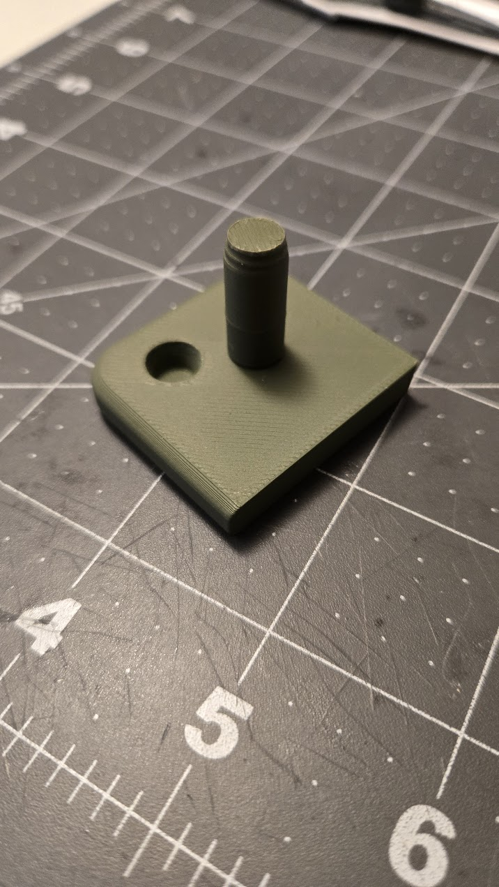
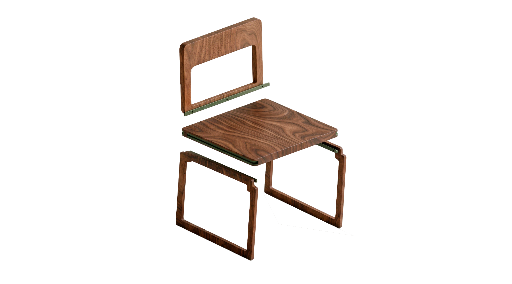
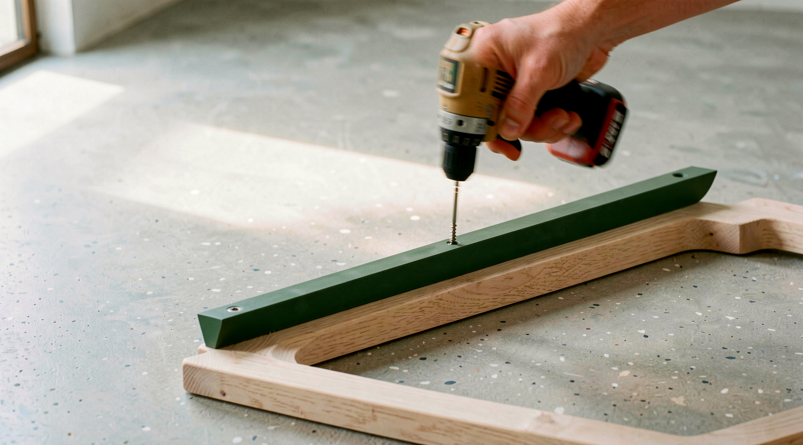
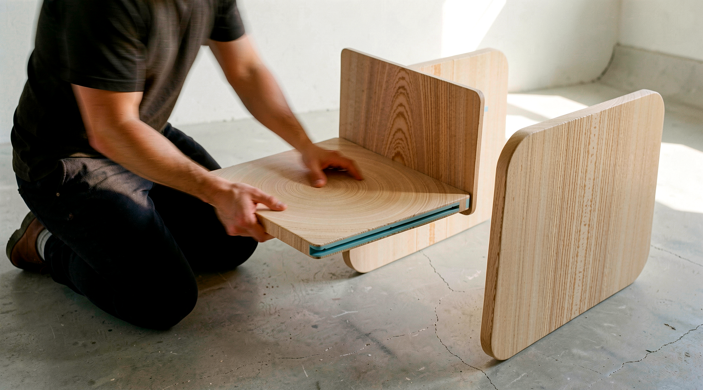
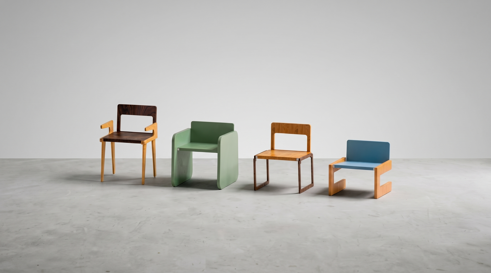

KNOT
A Modular Furniture System — BFA Capstone
Overview
A modular chair system born from a semester of industry research — designed from the ground up for hybrid production, prototype-validated, and built to ship flat.
Phase 1 — Research
Before designing anything, I spent a semester mapping the furniture industry. The US market is a $193B landscape broken into four tiers: Mass-Market, Mid-Market, Boutique Craft, and Hybrid Custom. Most furniture lives at the extremes — cheap and scalable, or handcrafted and expensive. The 10% hybrid-custom segment is the least served, but research showed it sits at the sweet spot across five axes: Craftsmanship · Cost · Output · Customization · Sustainability.
I conducted site visits and interviews with Columbus-area furniture makers. The deepest case study was A Carpenter's Son Design Co. — a Columbus hybrid fabricator that started selling cutting boards as a fundraiser and pivoted to heirloom furniture. Their workflow: Design Proposal → Fabrication (4 fabricators, 1 piece per maker) → Finishing → Onsite Install. No automation, but technology used selectively to improve workflow without sacrificing craft.
Interviews: Josh Scheutzow (Founder) · Brad Hosfeld (Lead Designer) · Cain Lackey (Shop Manager) · Ellen Vail (Project Coordinator) — A Carpenter's Son Design Co.; also Hazelwood Millworks · Columbus Furniture Company · MRO Built.
The bottleneck in hybrid production isn't materials or machines — it's joinery complexity. The design opportunity: a connection system strong, repeatable, tool-minimal, and CNC-compatible.
Design Criteria
Research translated directly into six requirements — each one tied to a finding from the field.
Consumers value durability and longevity
Use high-quality solid wood construction
Hybrid producers rely on repeatable, standardized components
Design around modular, interchangeable part systems
Labor-intensive fabrication limits scalability
Minimize complex manual joinery and assembly time
Flexible production enables customization at scale
Create configurable components with shared interfaces
Sustainability is a key purchase driver
Optimize for efficient material usage and repairability
Hybrid makers leverage digital fabrication
Ensure geometry is compatible with CNC / precision manufacturing
Connector Ideation
I explored the full space of connection strategies through sketching: sliding interfaces, slide-and-lock mechanisms, compression concepts, interlocking geometries, mortise-and-tenon, finger joints, dovetail-inspired geometries, and screw-in-place fasteners. The goal wasn't to pick a direction early — it was to exhaust the option space before committing.

Prototyping + Validation
Geometry developed in SolidWorks, then 3D-printed rapid prototypes tested each connector approach. Key findings:
- Mortise and tenon: strong but not versatile — locked into one configuration
- Vertical interfacing: strong but limiting
- Sliding connectors: most intuitive for assembly and disassembly
- Dovetail-inspired geometry: best combination of strength and customization — self-aligning, CNC-compatible, visually clean

Dovetail bracket plate — testing slot geometry and CNC compatibility

Peg-and-socket iteration — testing insertion force and fit tolerance

Refined bracket — final geometry before CNC validation
The Connector
The dovetail-inspired bracket is the system's core innovation. It self-aligns during assembly, requires no complex manual joinery, and is fully CNC-compatible for repeatable hybrid production. Each chair uses two brackets — one connecting the seat to the frame, one connecting the backrest — giving the system its modularity: any seat pairs with any backrest.


Bracket insertion — self-aligning geometry, no tools required at this step

Final fastening — one screw per bracket, standard drill
Assembly
The system assembles in under 10 minutes. No proprietary tools, no complex joinery. Frame → brackets → seat → backrest. The shared interface means components can be swapped, reconfigured, or replaced independently.

Assembly in the shop — tool-minimal, designed for fabricators and end users alike

Seat slides into the bracket track — no alignment guesswork
Configurations
Because every component shares the same connector interface, the system produces a genuine range — not just colorways, but structurally different configurations. Dining, lounge, task, barstool. Walnut, oak, ash, painted. The bracket is the constant. Everything else is a variable.

Unlimited configurations from one connector system — shared bracket, different components

Flat-Pack
The same modularity that enables configurations also enables flat shipping. Components nest flat in a compact box. Reduced volume, reduced damage risk, reduced cost. The design criteria built this in from day one — it wasn't a feature added at the end.

Ships flat — all components in one compact box, drill included in the process

Move, reassemble, reconfigure — the same system that ships flat moves with you
Reflection
This project proved that good design research changes what you design, not just why you design it. The connector strategy didn't come from aesthetics — it came from understanding exactly where hybrid production breaks down. That's the difference between a chair and a system.